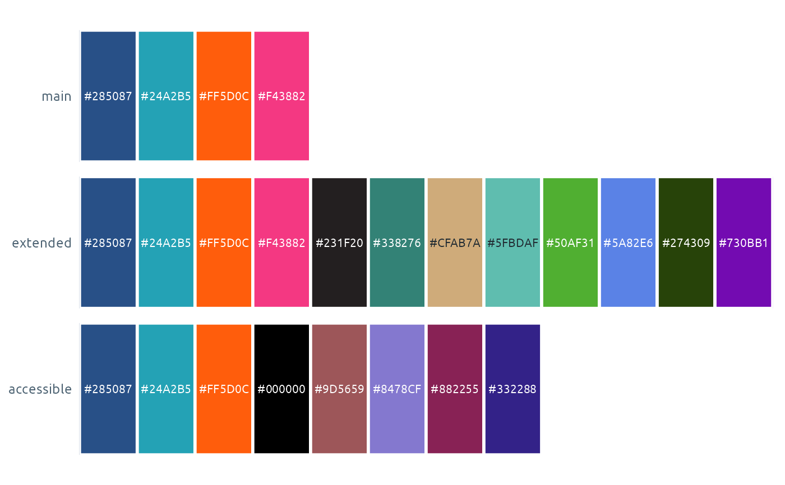

The palettes the package uses for discrete (qualitative), sequential and diverging scales.
Details
main(qualitative, 4): navy, teal, orange, pink. The default. It stays distinguishable under all three colour-vision deficiencies.extended(qualitative, 12):mainand eight more. Charts with more than four groups carry on into it automatically, so every chart in a report starts with the same four colours. It is built in order of how well each colour is sourced:1 to 4 are
main.5 to 7 have a published source: black and gold (Pantone 465) from the NHS Wales logo guidelines, and the green of the phw.nhs.wales website.
8 and 9 are mint and bright green from the Long-Term Strategy.
10 to 12 (blue, dark green, violet) are not PHW colours. They were chosen in the same hues to stay distinct from the other nine.
Every pair of the twelve stays apart for colour-blind readers: the colour difference (delta E in CIELAB, a scale where about 10 or more is easy to tell apart) is at least 15 under simulated deuteranopia and protanopia, the two red-green types. Gold, mint and bright green are below 3:1 contrast on white, so they suit filled shapes better than thin lines. Twelve lines on one chart are still hard to read: use facets or direct labels where you can.
accessible(qualitative, 8): chosen so every pair stays distinct under simulated deuteranopia, protanopia and tritanopia (minimum colour difference, delta E, of about 20), and every colour has at least 3:1 contrast on white. It starts with navy, teal and orange, so short series still look like PHW. It is never used unless you ask for it: seephw_default_palette()for how to switch a whole script or document to it.highlight(qualitative, 2): navy for the focus series, light grey for everything else.rag(qualitative, 3): red / amber / green (RAG) status colours that keep 3:1 contrast on white. These were chosen for phwstyle, not taken from a PHW source.rag_accessible(qualitative, 3): likerag, but "good" is navy instead of green, because red and green look alike to many colour-blind readers.strategy(qualitative, 6): the colours of the six strategic priorities in PHW's Long-Term Strategy 2023 to 2035, namedservices,system,behaviours,wellbeing,determinantsandclimate. Use it for work reported by priority. The order is not the strategy's own numbering: it followsmain(blue, teal, orange, pink, then the rest), so the first groups in a chart look the same whichever palette is used. To colour by priority, match on the names.blues,teals,greens,gradient(sequential).greensruns from a pale tint to the website green and its dark shade.orange_navy(diverging).
Colour order. main, extended and accessible all start navy,
teal, orange, so a chart with up to three groups looks the same
whichever of them a report uses. highlight starts with the same navy,
then grey. strategy has its own shades in the same order: blue, mint,
orange, pink. The exceptions are the palettes where colour carries a
fixed meaning (rag, rag_accessible), and the sequential and diverging
palettes, which run from light to dark.
Examples
names(phw_palettes)
#> [1] "main" "extended" "accessible" "highlight"
#> [5] "rag" "rag_accessible" "strategy" "blues"
#> [9] "teals" "greens" "gradient" "orange_navy"
phw_palettes$main
#> [1] "#285087" "#24A2B5" "#FF5D0C" "#F43882"
phw_palettes$strategy
#> services system behaviours wellbeing determinants climate
#> "#215B8B" "#5FBDAF" "#ED6F18" "#E05A8C" "#5A356B" "#50AF31"
show_phw_palettes(c("main", "extended", "accessible"))
